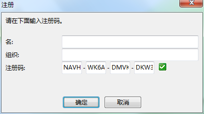

服务器： 后台
应用程序分类：
B/S：Browser（浏览器）/ Server（服务器）
C/S：Client（客户端）/ Server（服务器）
http协议：基于TCP/IP的无状态通信协议
前端（浏览器客户端）向后台（web服务器端）发送http请求获取数据
http请求报文：
一个HTTP请求报文由请求行（request line）、请求头部（header）、空行和请求数据4个部分组成
form的enctype属性为编码方式，常用有两种：application/x-www-form-urlencoded和multipart/form-data，默认为application/x-www-form-urlencoded。
当action为get时候，浏览器用x-www-form-urlencoded的编码方式把form数据转换成一个字串（name1=value1&name2=value2...），然后把这个字串追加到url后面，用?分割，加载这个新的url。
当action为post时候，浏览器把form数据封装到http body中，然后发送到server。 如果没有type=file的控件，用默认的application/x-www-form-urlencoded就可以了。 但是如果有type=file的话，就要用到multipart/form-data了。
当action为post且Content-Type类型是multipart/form-data，浏览器会把整个表单以控件为单位分割，并为每个部分加上Content-Disposition(form-data或者file),Content-Type(默认为text/plain),name(控件name)等信息，并加上分割符(boundary)。
http响应报文：
Response Headers里的Content-Type指服务器告诉浏览器相应的数据，类型一般有这三种：
application/x-www-form-urlencoded：数据被编码为名称/值对。这是标准的编码格式
multipart/form-data： 数据被编码为一条消息，页上的每个控件对应消息中的一个部分
text/plain： 数据以纯文本形式(text/json/xml/html)进行编码，其中不含任何控件或格式字符
Status-Code表示服务器发回的响应状态代码；Reason-Phrase表示状态代码的文本描述。状态代码由三位数字组成，第一个数字定义了响应的类别，且有五种可能取值。
1xx：指示信息--表示请求已接收，继续处理。
2xx：成功--表示请求已被成功接收、理解、接受。
3xx：重定向--要完成请求必须进行更进一步的操作。
4xx：客户端错误--请求有语法错误或请求无法实现。
5xx：服务器端错误--服务器未能实现合法的请求。
常见状态代码、状态描述的说明如下。
200 OK：客户端请求成功。
400 Bad Request：客户端请求有语法错误，不能被服务器所理解。
401 Unauthorized：请求未经授权，这个状态代码必须和WWW-Authenticate报头域一起使用。
403 Forbidden：服务器收到请求，但是拒绝提供服务。
404 Not Found：请求资源不存在，举个例子：输入了错误的URL。
500 Internal Server Error：服务器发生不可预期的错误。
503 Server Unavailable：服务器当前不能处理客户端的请求，一段时间后可能恢复正常。
PHP、Java、ASP等服务器程序
PHP（HyperText Preprocessor）是一种创建动态交互性站点的强有力的服务器端脚本语言。
第一句 Hello World
echo
<?php
echo 'hello word<br>'; // echo('hello word<br>');
?>
输出结果为：
die() >> 输出内容的同时结束程序
1) 变量
$num = 20;
echo $num;
2)for()...
for ($i=1; $i<=5; $i++){
echo "The number is " . $i . "<br>";
}
while
$x = 1;
while($x < 10){
$x++;
echo $x;
}
3) if else
if (条件1){
条件1成立时执行的代码；
}elseif(条件2){
条件1不成立但条件2成立时执行的代码；
}else{
4)变量|函数：
其实PHP最经典，也是最核心的地方就是函数，PHP提供了超过一千种內建函数，参考手册点击前往;
函数：function 关键字声明函数;
函数分成两个部分，一部分是函数体，另一部分是函数调用；
函数体：function(关键字) fnName(函数名任意值) ()(小括号,其中可以有形参){
//待执行语句;
return //如果遇到return关键字则终止函数运行，并将return后的值作为函数的返回值;
}
例:
function fnName(){
}
函数调用:
目的：执行函数体中待执行语句;
fnName(函数名) ()(小括号,期中可以传入实参)
例:
$x = 123
fnName($x );
超级全局变量：
这种变量在脚本的全局都可以使用：
- $GLOBALS
- $_SERVER
- $_REQUEST
- $_POST
- $_GET
- $_FILES
- $_ENV
- $_COOKIE
- $_SESSION
以上都是超级全局变量；
$_REQUEST会收集表单提交的信息；
<html>
<body>
<form action="<?php echo $_SERVER['PHP_SELF'];?>">
<!-- 利用$_SERVER获取当前脚本地址 -->
<input type="text" name="user">
<input type="submit" value="处理数据">
</form>
<?php
if($_REQUEST){
$userName = $_REQUEST['user'];
echo $userName;
}
?>
</body>
</html>
$_POST|$_GET 用于收集表单数据，但是这里规定了发送方式，也就是表单上的method='PSOT'|method="GET"；
<html>
<body>
<form method="POST" action="<?php echo $_SERVER['PHP_SELF'];?>">
<!-- 利用$_SERVER获取当前脚本地址 -->
<input type="text" name="user">
<input type="submit" value="处理数据">
</form>
<?php
if($_POST){
$userName = $_POST['user'];
echo $userName;
}
?>
</body>
</html>
php中的数据类型：
共有八中数据类型：
1.boolean（布尔型）;
2. integer（整型）;
3.float(浮点型);
4.string(字符串)
5.array（数组）
6.object(对象)
7. resource（资源）
8.NULL（null）
PHP为我们提供了和typeof一样功能的一个PHP方法gettype(),这个方法主要返回当前数据的数据类型;
同时还为我们提供了更有趣的方法:var_dump() 这个方法会返回给我们当前数据类型和数据值
当我们真正想要判断这个值的数据类型的时候我们用is系列的方法；这个系列的方法返回的是布尔值，用于if判断;
is_int() 是不是整型;
is_bool()是不是布尔值;
is_string()是不是字符串;
is_array()是不是数组类型；
is_double()是不是浮点数；
...
- 数组/对象
1.数组是啥？
用来储存多个数据的数据类型;
2.创建数组：
$arr = array(1,2,3,4,5)；
使用数组：
$arr[0] //1
$arr[1]//2
$arr[2]//3
$arr[3]//4
$arr[4]//5
手动数组赋值：
$arr[0] = 11;
数组相关方法:
获取数组长度：count()函数;
count($arr);//返回数组长度;
这样我们就可以写for循环了,数组中的内容我们就可以遍历出来了;
for($x = 0 ; $x < count($arr) ; $x++){
echo $arr[$x];
}
php关联数组：（用=>链接起来）
$testArray = array('name' => "zhangsan",'age' => 17 );
echo $testArray['name'].'\'s age is '.$testArray['age'];
数组排序：
sort() || rsort() ;
sort（）:升序排列； rsort() :降序排列;
遍历关联数组：foreach();
foreach()第一个参数为数组>> foreach($arr);
foreach()第二个参数为关键字as代表在数组中找到的值赋给后面的变量 >> foreach($arr as);
foreach()第三个和第四个参数为key和value ；也就是关联数组中的键和值 用 => 链接 >> froeach($arr as $key => value);
$arr = array('firstName' => 'yang', 'lastName' => 'huaizhi');
foreach ($arr as $key => $value) {
echo $key.'<br>';
echo $value.'<br>';
}
返回json
json_encode()方法进行json格式的转码；
json_decode()方法对json进行解析
数据库（database）： 按照数据结构来组织、存储和管理数据的仓库
商品id | 商品名称 | 销售单价 |
1 | 老坛酸菜牛肉面 | 5 |
2 | 百岁山矿泉水 | 3 |
3 | 鼠标 | 80 |
4 | 水杯 | 19.9 |
5 | 大宝剑 | 500 |
RDBMS：关系型数据库（MongoDB 非关系型数据库）
DB2
Oracle
SQLServer--MSSQL
MySQL
SQL：结构化查询语言
DDL：数据定义语言
DCL：数据控制语言
DML：数据操纵语言，INSERT（添加）、UPDATE（修改）、DELETE（删除）
DQL ：数据查询语言，SELECT（查询）
CRUD - 数据：添加（ Create）、查询（ Retrieve）、修改（ Update）、删除（ Delete）
概念：
数据库：存储数据的仓库
表：仓库里面的房间
列（字段）：房间里的箱子
行（记录）：箱子里的数据
主键：唯一标识记录
外键：
使用MySQL：
a. 安装
b. 启动MySQL数据库服务
c. 使用Navicat管理MySQL数据库：NAVH-WK6A-DMVK-DKW3

1. 建立连接
2. 创建数据库
3. 在数据库中创建表
数据类型：
数字：int double decimal numeric
字符串：char varchar text
日期时间：date、time、datetime、timestamp
4. CRUD
插入：
INSERT INTO 表名(列名) VALUES (列值)
修改：
UPDATE 表名
SET 列名=新列值, 列名=新列值
WHERE 条件
注意，不给修改的条件（WHERE子句）则会修改整张表的数据，这种修改是不可撤销的修改
删除：
DELETE FROM 表名
WHERE 条件
注意，不给删除的条件（WHERE子句）则会删除整张表的数据，这种删除是不可撤销
查询：
SELECT 列名
FROM 表名
WHERE 条件
ORDER BY 排序列 ASC|DESC
LIMIT 起始索引, 限定行数
ASC-升序
DESC-降序
SELECT id, name, birthday
FROM students
ORDER BY id ASC
LIMIT 3, 3
模糊查询：
LIKE
SELECT id, name, birthday
FROM students
WHERE name LIKE '李%'
创建用户表：
列：编号、用户名、密码、昵称、出生日期、积分、等级、注册时间
使用SQL：
向用户表中添加10条测试数据
修改用户数据
删除用户数据
查询用户数据
PHP连接数据库操作：
a. 建立连接
mysql_connect(servername,username,password);
-- servername 服务器名
-- username 登录数据库的用户名
-- password 密码
b. 选择数据库
mysql_select_db(dbname)
c. 设置编码
d. 编写SQL语句
e. 执行SQL语句
$result = mysql_query($sql);
-- 对 INSERT、UPDATE、DELETE 的SQL语句，返回的是布尔值：true表示SQL语句执行成功，false表示SQL语句执行失败
-- 对 SELECT ，返回的是查询的结果集（虚拟的表格）
f. 处理执行结果
-- 对于查询结果集，可以使用 mysql_fetch_assoc($result) 来读取查询结果集中的一行，放置到数组中保存
g. 关闭连接
mysql_close();
mysql_connect("localhost","root","");
mysql_select_db("test");
mysql_query("set charset 'utf8'");
mysql_query("set character set 'utf8'");
$sql = "SELECT * FROM user";
$result = mysql_query($sql);
while ($arr =mysql_fetch_assoc($result)) {
echo $arr['name']." : ".$arr['age'];
}
mysql_close();